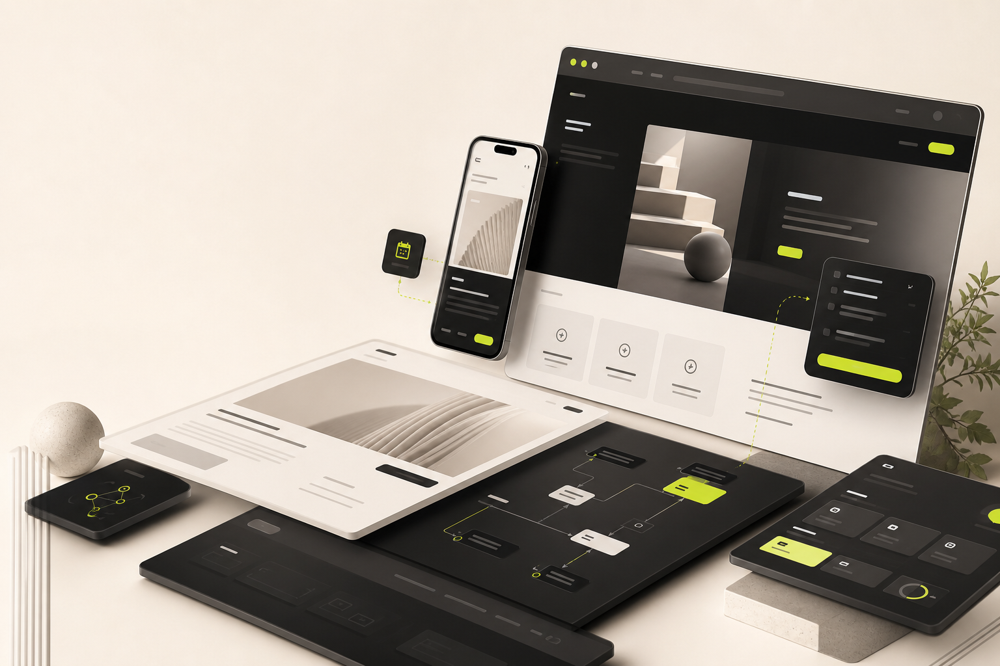

Direct communication
You work close to the person responsible for the outcome, not through layers of account handling.
About
Made to Scale uses a studio voice because projects can include selected collaborators, while clients still get a direct, focused working relationship.
Talk about a projectWe build premium, practical digital experiences without pretending to be bigger than we are.
The advantage of a focused studio is clarity. Strategy, design, development, and communication stay close together, which helps every decision serve the same business goal.
You work close to the person responsible for the outcome, not through layers of account handling.
The work starts with structure and scope so design and build decisions have a clear reason.
Websites are current proof. Web apps, booking systems, maintenance, branding, and AI integrations are built with clear planning.
When a project needs extra expertise, collaborators can be added while keeping the working relationship direct.
Values
Premium should feel useful, not distant. The site, system, or brand work should make the business clearer, easier to trust, and easier to grow.
Simple structure, sharp messaging, and interfaces that help people understand what to do next.
Strong typography, spacing, responsive behavior, accessibility basics, and performance-minded delivery.
Launch is not the end. Maintenance and improvements keep the digital presence useful over time.
Working model
The process is intentionally simple, especially for clients who do not know exactly what they need yet.
Send a message with what you are building, what exists now, and what needs to improve.
We define goals, scope, service needs, timeline, and a practical quote.
Design and build happen against an agreed direction, with check-ins along the way.
The project is checked across key screens, content, forms, SEO basics, and performance.
Maintenance, improvements, AI features, or new pages can be added after launch.
Start a project
A clear message is enough to begin. The project can be shaped from there.

Studio overview
Made to Scale is built for direct communication, careful execution, and practical support after launch.